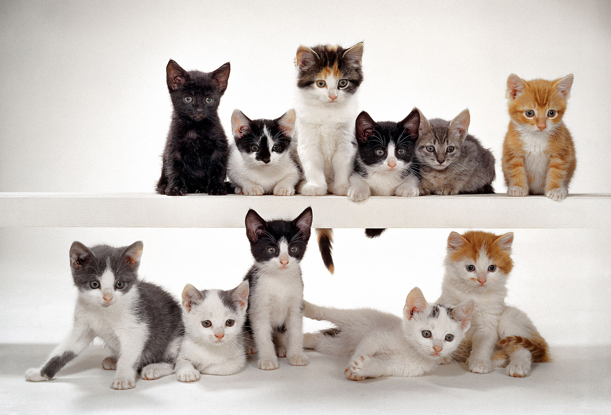
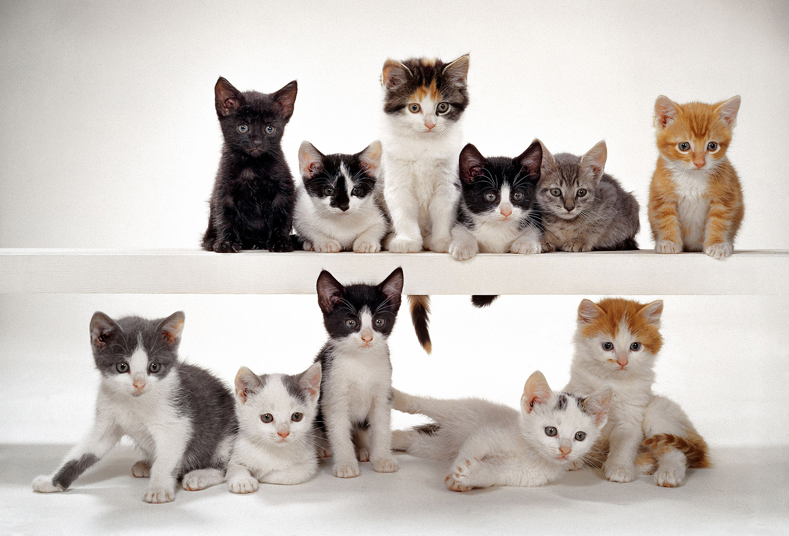

Luna
Luna es una gata elegante y misteriosa con un pelaje negro como la noche y ojos penetrantes de color verde esmeralda. Es independiente y reservada, pero disfruta de la compañía tranquila. Luna es conocida por su gracia felina y su habilidad para acechar presas. Sin embargo, también tiene un lado tierno y se acurruca suavemente en el regazo de sus dueños.


 
